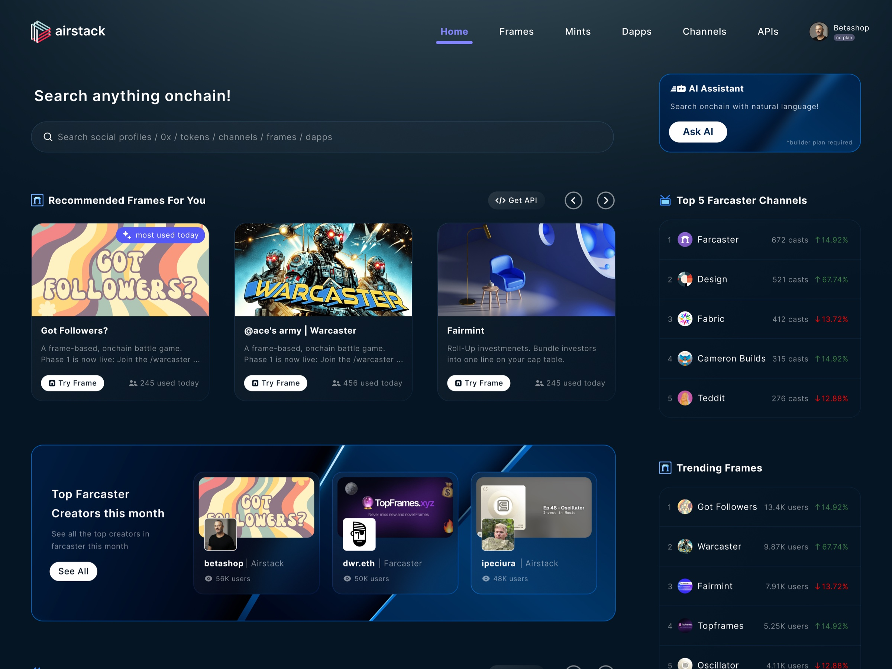
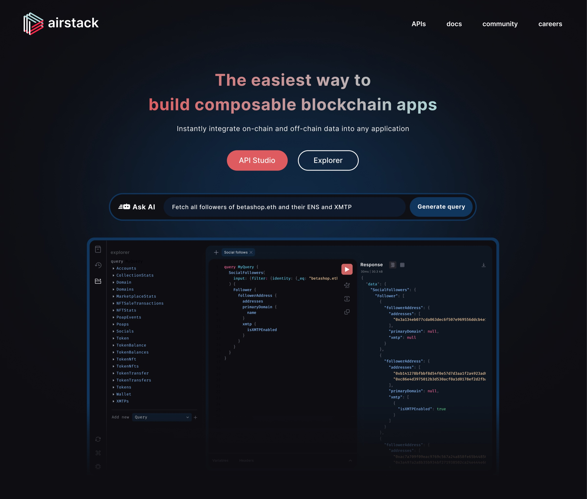
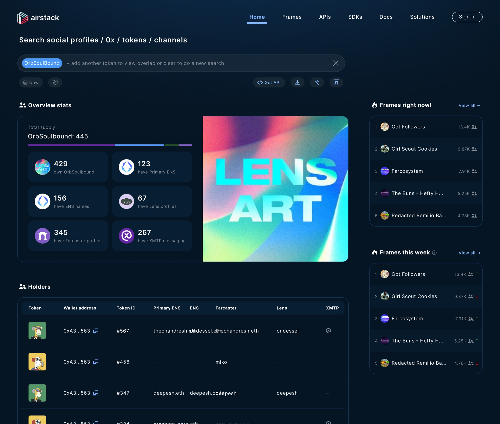
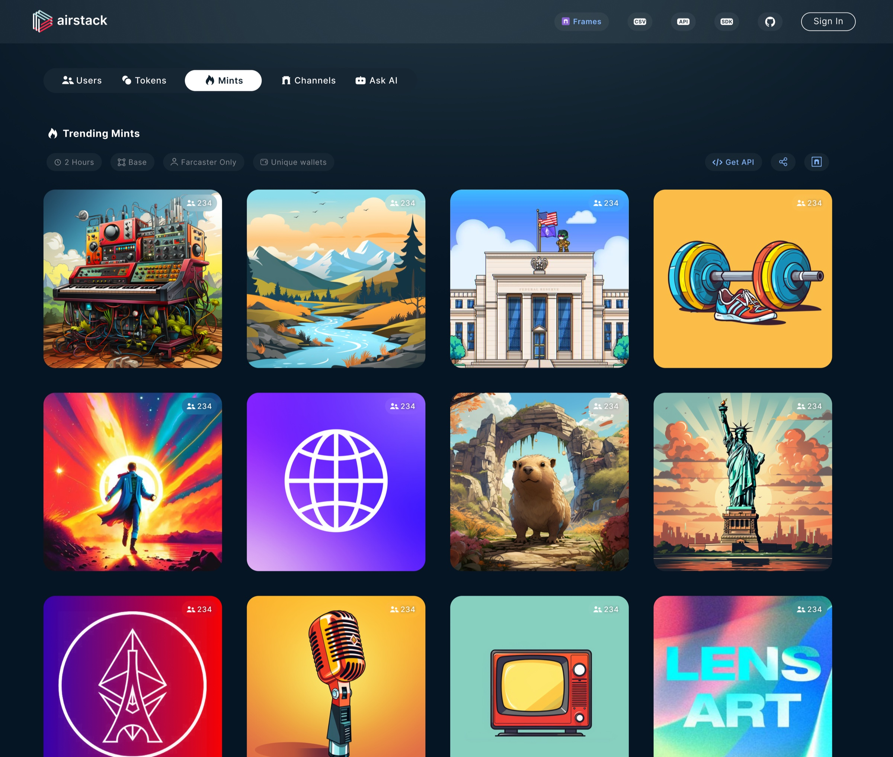
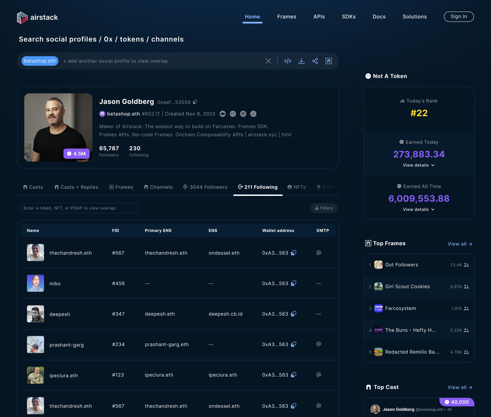
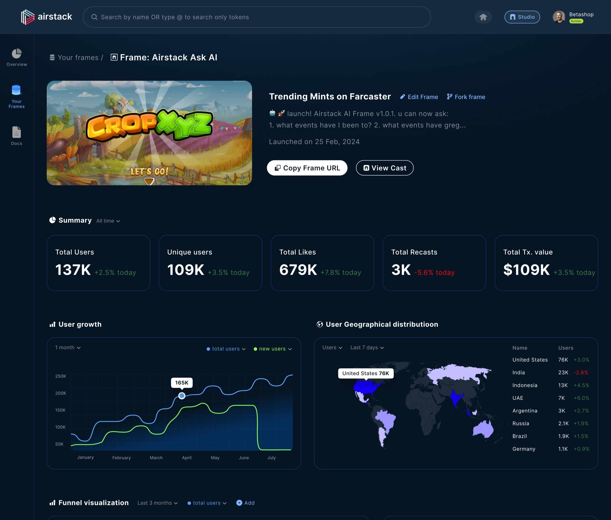
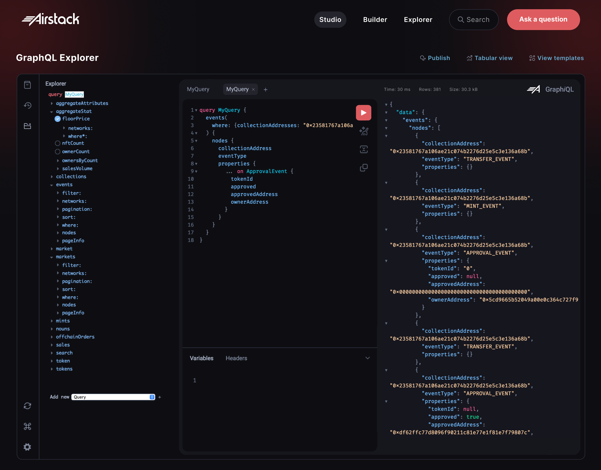
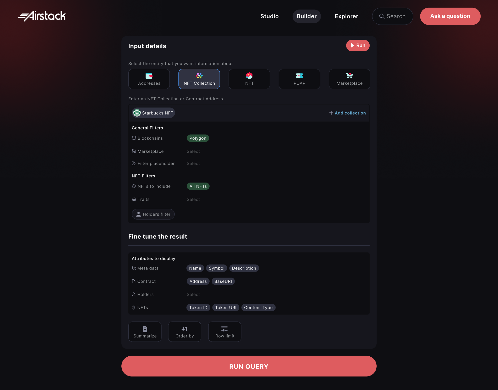
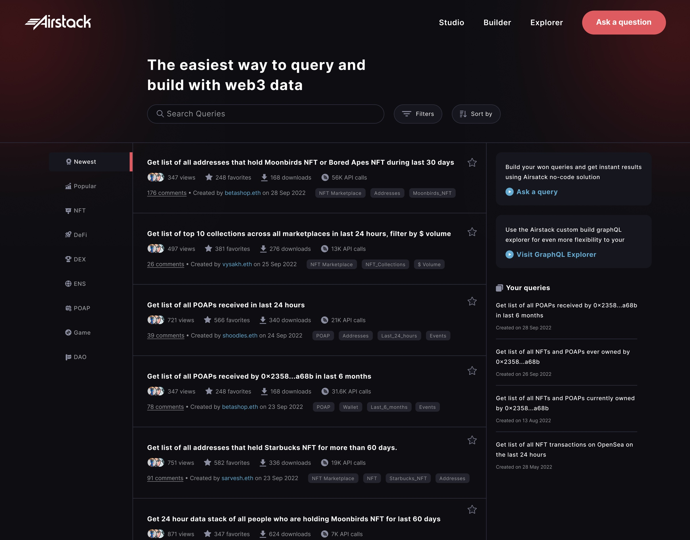

How do you make infrastructure tangible?
Airstack gave developers incredibly rich blockchain data through APIs — but the value was hard to understand until they actually built with it. My goal: let developers experience the value before asking them to integrate it.

The problem
Developers had to build before they could understand.
Documentation explained the API — but many developers still had to build a proof of concept just to discover whether Airstack could solve their problem. Engineering time was being spent validating the product rather than building with it.
Explorer
A visual way into the API.
Instead of asking developers to imagine what an API could return, Explorer let them see it.





The next problem
Developers could now see the data. But they still had to speak GraphQL.
Knowing what you want and knowing how to express it are two different problems. A developer might know “show me all NFT activity for this wallet” — translating that into the right schema, fields, filters and syntax still required work.
Studio
Natural language → GraphQL.
Studio let developers describe what they wanted in plain language. The developer stayed in control — AI generated the query, but the actual GraphQL remained visible and editable.


The next problem
“Has someone already solved this?”
Developers weren't only asking how to build queries. Useful queries and solutions were being created repeatedly — individually, invisibly.
Community
From query tool to developer knowledge base.
We expanded Studio toward a community experience — share useful queries, ask questions, discuss solutions, discover existing approaches, and improve each other's work. Individual problem-solving became shared knowledge.

The evolution
Each layer removed a different kind of uncertainty.
Outcomes
What I learned
Make the invisible explorable.
Documentation tells someone how a system works. Great developer experience helps them understand what's possible, why it matters, and how quickly they can try it. For Airstack, that meant changing the first interaction from “read our documentation” to “try it.” The real work wasn't three features — it was identifying the uncertainty preventing developers from understanding the product, then designing progressively better ways to remove it.